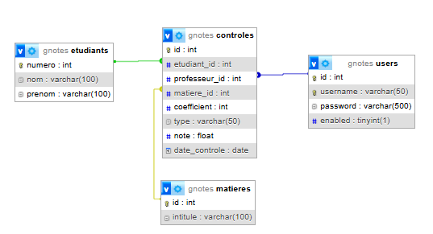
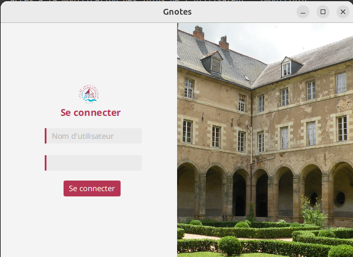
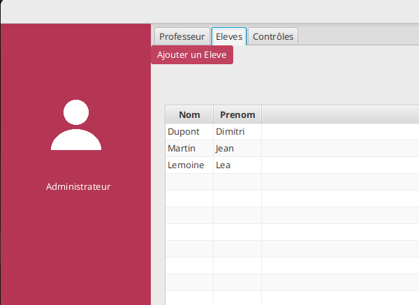

Gnotes est une application de bureau développée en Java, destinée aux enseignants pour la gestion des notes d’élèves. Elle permet une utilisation en mode hors ligne et intègre une interface JavaFX ainsi qu’une API REST réalisée avec Spring Boot. Elle offre une interface conviviale permettant de gérer les étudiants, les matières et les contrôles associés à des statistiques claires et détaillées.
Gnotes a été conçue pour répondre aux besoins des enseignants souhaitant :
Chaque enseignant peut consulter tous les étudiants, gérer les contrôles de sa matière, et suivre les performances par semestre.
Le projet est organisé en couches claires selon le modèle MVC :
com.saintsau.slam2.gnotes30.controller : pour gérer les vues et la navigation.com.saintsau.slam2.gnotes30.entity : correspondance directe avec les tables de la base.com.saintsau.slam2.gnotes30.service : logique métier (ex : calcul de moyenne).com.saintsau.slam2.gnotes30.jpaRepository : interfaces JPA pour interroger la base.com.saintsau.slam2.gnotes30.exception : gestion des exceptions personnalisées.
La base gnotesdb contient les tables principales suivantes :
etudiants : informations des élèves (nom, prénom, numéro).controles : chaque note liée à un élève, une matière et un professeur.matieres : liste des matières enseignées.users : informations de connexion des professeurs (nom d'utilisateur, mot de passe).Le schéma relationnel montre clairement les dépendances entre les entités. Par exemple, chaque contrôle possède une clé étrangère vers un étudiant, une matière et un utilisateur (professeur).
Le projet Gnotes est structuré autour de plusieurs classes Java réparties dans des packages bien définis. Chaque package a un rôle spécifique dans l’architecture de l’application selon le modèle MVC (Modèle-Vue-Contrôleur).
Etudiant, Controle, Matiere et User. Ces classes sont annotées avec JPA pour permettre la persistance en base de données.LoginPageController gère la connexion, tandis que AddControleController permet d’ajouter des contrôles.JpaRepository pour accéder aux données des entités sans écrire de requêtes SQL (ex : EtudiantRepository, ControleRepository).EtudiantNotFoundException ou ControleNotFoundException, afin de rendre les messages d’erreur plus explicites.Lors de l'ouverture de l'application, l'utilisateur est redirigé vers une page de connexion. Il doit entrer un identifiant et mot de passe. L’authentification est validée via l’API Spring Boot. En cas de succès, l'utilisateur est redirigé vers les onglets (Élèves, Professeurs, Contrôles).
L’interface permet de visualiser rapidement la liste des élèves enregistrés. Il est possible d’ajouter un élève via le bouton prévu à cet effet. Un double-clic permet d’accéder à ses notes et statistiques.
